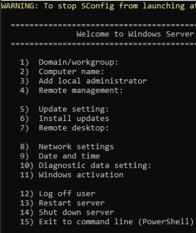

How to plan, build, and operate an Azure Local cluster, while avoiding notable pitfalls.
Microsoft publishes the requirements and keeps them current. Read those first, because this part is not a substitute for them.
System requirements for Azure Local covers machine count, processor, memory, drives, TPM, Secure Boot, networking and the supported regions. The Azure Local catalog lists the hardware you can buy and get supported for it.
What that page cannot tell you is which of its rules bite, and how. Everything below is either a requirement you can satisfy on paper and still fail, or a decision that becomes difficult to reverse once the hardware is in a rack.
The documentation states this plainly:
"Secure boot: Secure Boot must be present and turned on."
What it does not say is when. Windows seals its virtualization based security against the Secure Boot state it saw during installation. Install with Secure Boot off, switch it on afterwards to satisfy the checklist, and the machine stops booting. No repair path. A clean install is the only way back.
Treat Secure Boot as a firmware state to establish before any media is mounted, and the same goes for TPM and hardware virtualization. Set the firmware, verify it, then image.
One line in the requirements hints at the same problem, and it carries more weight than its placement suggests. A reset can quietly undo work you have already done.
"If the BIOS, Secure Boot, or TPM is reset, consult your OEM to ensure that the required optimized settings are applied."
"Each machine must be the same model, manufacturer, have the same processor types, have the same network adapters, and have the same number and type of storage drives."
Read as a requirement this is easy: every machine matches, so order them together and move on. What bites is what it means for the cluster you already have. A machine you add later has to match the machines already in it. Not the specification you wrote down. What is physically in the cluster now.
Decide two years from now that you want more capacity per node and you are not looking at an upgrade. It is every node or none of them, and on a live cluster that means draining and opening each machine in turn. This project changed its drive count once, before deployment, and it still meant taking every machine apart.
Decide the number at purchase. Decide it generously. Treat it as fixed for the life of the cluster.
A replacement drive has to match on type, capacity and performance. Buying one in three years means finding a part that may no longer be sold. The documentation allows some flexibility for repair, but the easy version of this problem is a spare in a drawer.
The storage rules are unambiguous:
"Host bus adapter (HBA) cards must support simple pass-through mode for any storage devices used with Storage Spaces Direct." and "RAID controller cards, SAN storage (Fibre Channel, iSCSI, or FCoE), shared SAS enclosures connected to multiple machines, and any form of multipath I/O (MPIO) where drives are accessible through multiple paths are not supported."
You can meet all of that, buy no RAID controller at all, and still end up with drives Storage Spaces Direct refuses to pool. Firmware level features that remap NVMe devices, Intel VMD being the common one, present the drives to Windows as though they sit behind a RAID layer. The hardware is compliant. The presentation is not.
The failure is quiet. The drives are present, they are healthy, they are the right size, and nothing explains why they cannot be used. One command tells you. Run it on every node before you deploy.
Get-PhysicalDisk | Select-Object FriendlyName, BusType, MediaType, Size, CanPoolData drives should report BusType of NVMe or SAS or
SATA. Anything reporting RAID is not usable, no matter how healthy it
looks.
Drives that arrive already partitioned report CanPool=False with
CannotPoolReason=Insufficient Capacity, which is misleading. They are not too
small. They need clearing first. Check the bus type before you assume the worst.
Hardware bought for this purpose generally satisfies this without anyone thinking about it, so treat it as a check. It is worth knowing because the rule is absolute.
"Before purchasing a machine for Azure Local, you must minimally have at least one adapter that is qualified for management, compute, and storage as all three traffic types are required on Azure Local."
"Using an adapter outside of its qualified traffic type is not supported."
learn.microsoft.com/en-us/azure/azure-local/concepts/host-network-requirements
Adapters are certified in the Windows Server Catalog against those three roles. Confirm the entry for the exact model before the order goes in, and move on.
This is the part that still catches a well specified estate. Switch Embedded Teaming is the only teaming technology the platform supports, and it constrains what can sit in a team.
"SET requires the use of symmetric (identical) adapters. Symmetric network adapters are those that have the same: make (vendor), model (version), speed (throughput), configuration."
The practical test is the interface description. Adapters in a team should report descriptions that match exactly, deviating only in a trailing numeral. Two cards from the same vendor at the same speed can still be different models, and a replacement pulled from a spares shelf is the usual way a mismatched one enters a cluster. Validation catches it, at the point where it is most disruptive to correct.
The documentation asks for an Active Directory domain and a deployment account, and states the rights that account needs. It does not address whether a given domain's policy permits them.
"Interactive logon. The deployment user must be allowed to log on interactively." and "Log on as a batch job. The deployment user must have the Log on as a batch job user rights."
learn.microsoft.com/en-us/azure/azure-local/deploy/deployment-prep-active-directory
Interactive logon for a non person account is the opposite of what most corporate security baselines enforce, and a hardened domain will often deny it through inherited policy that nobody can lift for one account. That is not a misconfiguration. It is two reasonable positions in conflict.
Plan for a domain or an organizational unit where you control policy inheritance. Decide it early, because it determines who you need to talk to and how long their process takes. Part 2 covers the rest of that conversation.
Boot drive guidance has a second tier that is easy to read past, and modern enterprise nodes land on the wrong side of it.
"To ensure adequate support and diagnosability for large memory Azure Local instances (those with more than 768 GB of physical memory per machine), we recommend that you install OS disks with a capacity of 400 GB or more."
The headline minimum is 200 GB. If your machines carry more than 768 GB of memory, that minimum is not the number you want, because a kernel memory dump has to fit on the operating system volume. Getting this wrong does not stop the cluster. It stops you diagnosing one, and you learn that during the incident.
See it run Movement 01, four nodes define the cluster, for what the hardware validator checks and what failing it looks like
A green field build does not hit most of what follows. Every item here applies when Azure Local goes into a tenant and a domain that already have rules, owners, and security controls, none of which were written with this product in mind.
What follows is the list: which permission, what it is for, and the level required to grant it.
Specify the action and the scope.
Microsoft.KubernetesRuntime/register/action at a named subscription is precise
enough to be granted as written, where a role name carries far more than the deployment
needs.
| To do this | You need | At | Granted by |
|---|---|---|---|
| Deploy at all | 13 resource providers registered | Subscription | Subscription Owner or Contributor |
| Import a Marketplace image | Microsoft.EdgeMarketplace/register/action |
Subscription | Subscription Owner or Contributor |
| Give a Kubernetes service an address on your network | Microsoft.KubernetesRuntime/register/action |
Subscription | Subscription Owner or Contributor |
| Run the deployment | Eight roles, listed below | Resource group | User Access Administrator or Owner on that group |
| Assign those eight to yourself | User Access Administrator | Resource group | Owner at the group or above |
| Create a Kubernetes cluster on it | Azure Kubernetes Service Arc Contributor | Resource group | User Access Administrator on that group |
| Let the deployment account join machines to the domain | Interactive logon, log on as a batch job, and rights over the organizational unit | The organizational unit | Whoever administers that domain |
| Clear a conflicting security policy | Tag write, or a policy exemption | The scope the policy is assigned at | The owner of that scope, which may be above your subscription |
The first three are the ones people are surprised by, because a provider registration is a subscription level action and no resource group role grants it. Holding Azure Stack HCI Administrator at the subscription and User Access Administrator at the resource group still permits none of them.
What that refusal looks like
AuthorizationFailed: The client does not have authorization to perform action
'Microsoft.KubernetesRuntime/register/action' over scope
'/subscriptions/<subscription-id>'.The level required matters as much as the action itself.
"Make sure that your Azure subscription is registered against the required resource providers. To register, you must be an owner or contributor on your subscription. You can also ask an administrator to register."
learn.microsoft.com/en-us/azure/azure-local/deploy/deployment-arc-register-server-permissions
Contributor is the documented minimum, so this requirement never escalates to Owner. Narrower
still is a custom subscription role carrying only the single register/action
involved, which is the smallest grant that does the job.
The same page separates the two responsibilities explicitly.
"The assumption is that the person registering the Azure subscription with the resource providers is a different person than the one who is registering the Azure Local machines with Arc."
Deployment needs all thirteen. A missing provider does not fail at the point of registration. It surfaces later as a validation error that names something else.
The full set, for whoever holds subscription Contributor
Register-AzResourceProvider -ProviderNamespace "Microsoft.HybridCompute"
Register-AzResourceProvider -ProviderNamespace "Microsoft.GuestConfiguration"
Register-AzResourceProvider -ProviderNamespace "Microsoft.HybridConnectivity"
Register-AzResourceProvider -ProviderNamespace "Microsoft.AzureStackHCI"
Register-AzResourceProvider -ProviderNamespace "Microsoft.Kubernetes"
Register-AzResourceProvider -ProviderNamespace "Microsoft.KubernetesConfiguration"
Register-AzResourceProvider -ProviderNamespace "Microsoft.ExtendedLocation"
Register-AzResourceProvider -ProviderNamespace "Microsoft.ResourceConnector"
Register-AzResourceProvider -ProviderNamespace "Microsoft.HybridContainerService"
Register-AzResourceProvider -ProviderNamespace "Microsoft.Attestation"
Register-AzResourceProvider -ProviderNamespace "Microsoft.Storage"
Register-AzResourceProvider -ProviderNamespace "Microsoft.Insights"
Register-AzResourceProvider -ProviderNamespace "Microsoft.KeyVault"Learn states that without it "the diagnostic account and Key Vault audit logging fails during validation". It is easy to treat as optional monitoring and it is not.
Two more providers sit outside that list and are worth deciding on early, because each unlocks
a capability you may be planning to demonstrate. Microsoft.EdgeMarketplace is
required before any Azure Local compatible Marketplace image can be imported.
Microsoft.KubernetesRuntime is required for MetalLB, and therefore for giving a
Kubernetes Service an address on your own network.
When a control is inherited from a management group, the subscription owner cannot lift it, and
you may not be able to see where it comes from. An AuthorizationFailed on
Microsoft.Management is itself the finding: the policy is assigned above you, and
the approver is a central team.
Learn asks you to confirm this before deployment.
"Check your Azure policies. Make sure that: The Azure policies aren't blocking the installation of extensions. The Azure policies aren't blocking the creation of certain resource types in a resource group. The Azure policies aren't blocking the resource deployment in certain locations."
A policy driven conflict does not always need a subscription wide exception. The monitoring agent conflict below was resolved with a tag applied at the resource and resource group level, a scope that remained writable when the subscription was denied. It also keeps the blast radius to the machines that need it. Check what the control actually reads before assuming the exception has to be granted at the top.
Provider registration happens once, at the subscription. These are different. They attach to the identity running the deployment, and they are assigned at the resource group rather than the subscription.
| Role | Why it is needed |
|---|---|
| Azure Stack HCI Administrator | The deployment itself |
| Reader | Listed by Microsoft, and already covered if you hold Contributor |
| Azure Connected Machine Onboarding | Registering the machines as Arc resources |
| Azure Connected Machine Resource Administrator | Managing those Arc resources afterwards |
| Key Vault Contributor | Creating the key vault used for deployment |
| Key Vault Secrets Officer | Reading and writing the deployment secrets |
| Key Vault Data Access Administrator | Managing data plane permissions on that vault |
| Storage Account Contributor | Creating the storage account used for deployment |
Add User Access Administrator at the resource group and you can assign most of that list to yourself, which turns eight separate requests into one. Owner is not required for any of it.
Contributor already contains Reader. Owner already contains Contributor and User Access Administrator. Check what your existing assignments and any eligible roles already cover before you send the list, because asking for a role you demonstrably hold invites a review of the whole request. Eligible roles are the easy ones to miss, since they stay invisible in a plain role assignment listing until somebody activates them.
Kubernetes is separate. Holding the Azure Local roles does not let you create an AKS cluster on it. That needs the Azure Kubernetes Service Arc Contributor role, and discovering it late looks like a broken platform rather than a missing assignment.
The list above is what a deployment needs, which is a different question from how those rights should be held. A single engineer activating every role for a working day is the right shape for proving a platform and the wrong shape for running one.
Distributed across the functions that exist in most organizations, the same permissions look like this.
| Function | What it holds | Scope | How it is held |
|---|---|---|---|
| Platform or subscription team | Provider registration, policy exemptions, the first role assignments | Subscription, and the management group above it | Standing for them. A one time request from you |
| Deployment operator | The eight roles above, plus User Access Administrator to assign them | The Azure Local resource group | Just in time, for the duration of a build |
| Cluster operations | Reader in Azure, plus failover cluster and storage rights through a domain group | Resource group, and the cluster itself | Reader standing. Anything that changes state, just in time |
| Workload owners | Azure Stack HCI VM Contributor, or AKS Arc Cluster User for Kubernetes | Resource group, or one cluster resource | Standing, where the workload is theirs to run |
| Automation | Only what its pipeline creates. Commonly Azure Stack HCI VM Contributor, and Storage Blob Data Contributor on its own state account | Resource group, and one storage account | A federated workload identity. No secret in a pipeline variable |
| Reporting and dashboards | Reader, and nothing else | Resource group | Its own identity, never a person's elevated session |
Assign to Entra groups and domain groups throughout, and put the eligibility on the group. Somebody joining cluster operations should be one group membership rather than a fresh set of role assignments, and somebody leaving should be one removal. This also makes the answer to "who can do this" a question you can answer without an audit.
The domain account that deploys the cluster needs interactive logon and rights over an organizational unit. Afterwards it needs neither, and it should not be what anyone uses to administer the cluster. Azure Local rotates the local machine credentials during deployment, so the account you built the machines with stops working on purpose. Treat that as the intended boundary and plan the operations path separately.
The deployment account needs a password that stays stable through the build and does not expire quietly afterwards. Record both the password expiry and any account expiry on the day you create it. A lifecycle operation that fails a year later because a service account aged out presents as a platform fault and is genuinely difficult to trace back.
The resource group boundary is a permission decision. Every row above that says resource group only means something if the cluster, its Arc machines, its key vault, its storage account and its Kubernetes resources sit in one resource group that holds nothing else. Decide that before deployment. The subscription cannot be changed afterwards, and moving resources later means re-granting all of it.
An exemption belongs in the policy system. Switching off a conflicting control with a tag is the mechanism the product gives you, and on its own it leaves no owner, no expiry and no review. The enterprise form of the same change is a policy exemption recorded at the scope the assignment lives on, with a named owner and a date it gets looked at again. Use the tag to unblock the work, and open the exemption so the gap is visible to the people who own the control.
Azure Local deployment needs a domain account with rights that a hardened corporate domain is usually configured to refuse. Inherited policy on the original domain blocked the path outright, and the fix was not a policy exception. The project moved to a separate domain where an organizational unit, the account, its direct permissions and a Group Policy boundary could all be created.
The requirement that causes the argument is this one. Have the citation to hand before you ask:
"Interactive logon. The deployment user must be allowed to log on interactively." and "Log on as a batch job. The deployment user must have the Log on as a batch job user rights."
learn.microsoft.com/en-us/azure/azure-local/deploy/deployment-prep-active-directory
Interactive logon for a non person account is the opposite of what most corporate security baselines enforce, so expect to defend it. The product requires it, and the link above is your primary source.
This one is the most likely to catch a corporate-managed build specifically, and it does not look like a monitoring problem when it happens.
Azure Local observability will not come up. A mandatory extension never reaches a ready state, and the deployment will not start.
The corporate security monitoring package, pushed by policy, had already claimed the single monitoring agent slot on the machine. Azure Local wants that slot.
A scoped opt out, SkipSecurityMonitoringAgent=true, plus removal of the extension
that installed itself already.
You are switching off a security control that somebody owns. Write down the scope, who approved it, how it is rolled back and how you verified it, at the time you do it. That record is the difference between a documented exception and an unexplained gap found later.
A just in time activation can report active while the resource provider still refuses the
operation. An AuthorizationFailed in the first few minutes after activating is
usually propagation rather than a missing right. Activate ahead of the change window, then
confirm with one narrow read.
Three steps, and the order is itself the instruction. Firmware, then the operating system, then drivers, and nothing that patches the machine until the platform does it for you.
Two of the three cannot be corrected afterwards. Getting the sequence right is the whole of this part.
The installation itself is ordinary Windows work, Microsoft documents it, and this guide does not repeat it. Keep Secure Boot on throughout, and have the storage controller driver to hand for the partition screen. Everything below is the part that is specific to Azure Local.
Part 1 covers why Secure Boot has to be established before installation. The practical form is one pass through firmware on every machine, completed before anything is imaged.
| Setting | Value | Why |
|---|---|---|
| Boot mode | UEFI | Secure Boot requires it |
| Secure Boot | Enabled | Required, and sealed at installation. Enabling it later leaves the machine unbootable |
| TPM | 2.0, enabled | Required, and checked by the hardware validator |
| Virtualization | Enabled, including IOMMU | The hypervisor will not start without it |
| Storage controller | Pass-through, no RAID and no NVMe remapping | Storage Spaces Direct refuses remapped drives. See Part 1 |
| Option ROMs on add-in cards | Boot driver disabled for cards you never boot from | Secure Boot rejects an unsigned adapter option ROM, which halts the machine at every power on |
Verify on the machine, rather than trusting the firmware screen
Confirm-SecureBootUEFI
Get-Tpm
(Get-ComputerInfo).HyperVRequirementVirtualizationFirmwareEnabledIf the BIOS, Secure Boot or TPM is reset on a machine that is already deployed, the settings above have to be re-applied before it comes back. Microsoft's requirements page says to consult your vendor for the optimized settings after any such reset.
A freshly imaged machine offers to install its own updates, which almost everywhere else is the responsible thing to accept. On Azure Local it is the one action at this stage that cannot be undone. Microsoft states the rule plainly.
"Do not install Windows Updates using SConfig or Azure Update Manager. Updates are installed during the deployment. Installing updates using SConfig or Azure Update Manager causes a deployment failure."
learn.microsoft.com/en-us/azure/azure-local/deploy/deployment-install-os
Arc bootstrap refuses the machine, failing
AzStackHci_OSImageRecipeValidation_LCU.
The installation image is signed against a recipe that names exact update versions. The check compares the machine to that recipe rather than to a minimum, so an update that is newer still counts as a mismatch.
Re-image. Nothing short of that restores the match. The platform applies the right updates itself during onboarding, which is the supported path and leaves validation intact.
The first boot menu lists them one after the other. One is the safeguard and the other is the failure.
| Option | What it does | What to do with it |
|---|---|---|
| 5) Update setting | Controls whether the machine fetches and applies updates on its own | Set it to manual, before anything else |
| 6) Install updates | Fetches and installs updates immediately | Never before deployment. The machine has to be re-imaged afterwards |

Automatic updates are on by default, so a machine can reach this state with nobody having touched the menu. Leave a freshly imaged machine overnight and it can apply updates on its own schedule, arriving in the morning already unusable for deployment.
That is what option 5 prevents. Set it during the same session as the installation, because the window before a return visit is the exposure.
Windows ships a working driver for most network adapters, and Azure Local does not accept it on an adapter carrying an intent. The requirement and the test for it are both stated plainly.
"Inbox drivers are not supported for use with Azure Local. To identify if your adapter is using an inbox driver, run the following cmdlet. An adapter is using an inbox driver if the DriverProvider property is Microsoft."
"If inbox driver is being used, download and install the latest driver from your OEM partner's website."
learn.microsoft.com/en-us/azure/azure-local/concepts/host-network-requirements
The documented check, one adapter
Get-NetAdapter -Name <AdapterName> | Select *Driver*The same thing across a node, which is what you actually want
Get-NetAdapter |
Select-Object Name, InterfaceDescription, DriverProvider, DriverVersionStricter than people expect on provenance, and not strict at all on currency. The rule is a
string comparison: an adapter fails if DriverProvider reads
Microsoft, and passes if it reads the vendor name. Nothing in the check looks at
the version or the date.
That has a practical consequence when an adapter is old enough that its vendor no longer
publishes a current package. On this build the management adapter was running the Microsoft
supplied driver dated 2007. The vendor package that replaced it was itself from 2017, and
DriverProvider flipping from Microsoft to the vendor name was the
entire difference between failing and passing.
The documentation says to install the latest driver from your OEM partner, and that is still the right instruction. An older vendor driver satisfying the gate tells you the validator will not block you. It does not tell you the driver is a good one to run, and a vendor driver that has not been updated in years is worth raising with whoever owns support for that hardware.
Apply it to every adapter that carries an intent, management included. Management adapters are
the ones people skip, because they are visibly working and usually carrying the session you are
connected over. A working adapter on an inbox driver still fails validation. The check that
reports it is AzureLocal_Network_Test_NetworkAdapter_InboxDriver, which is worth
searching for directly.
See it run Movement 00, six machines and two switches, for the state of the estate before any of this is configured
Microsoft documents the wizard, so this does not walk its pages. The useful thing to know before you open it is that the wizard is the short part.
A clean deployment on four machines runs 54 steps in about two hours and thirteen minutes. Plan the maintenance window around that figure. Plan the preparation before it separately, because that is where the work actually sits.
There are two phases and they behave completely differently.
| Validation | Deployment | |
|---|---|---|
| Destructive | No | Yes, it configures the machines |
| Repeatable | Run it as often as you like | One attempt |
| On this build | Days to weeks | Two hours and thirteen minutes |
So run validation early and run it often. It is the same environment checker the portal runs, it is non-destructive, and every pass returns a different blocker than the last one. Treat a clean validation as the milestone. The deployment that follows is largely uneventful if you earned it.
Within a clean run of 54 steps there were no failures and no retries. That is not the same as saying the deployment never needed retrying. Every correction happened during validation, which is exactly where corrections belong.
The wizard asks for roughly forty values across eight pages, several of which need a decision from somebody who is not in the room with you. Fill it in on paper first, in a file you keep, and paste from that. Group the answers the way the wizard does: subscription, resource group, instance name, region, cluster and storage options, identity provider and key vault, then the security baseline, the machines, networking, management settings and volumes.
Doing it this way survives the wizard changing, which it does.
"Field names and page order shift slightly between Azure Local versions. The VALUES below are what matter; map them to whatever the current wizard labels."
The subscription cannot be changed afterwards. Microsoft is explicit that once you have selected a subscription and deployed, redeploying the cluster is the only way to move it. Confirm you are in the subscription the cluster should live in for its whole life, not whichever one you happen to hold rights in this week.
The instance name becomes a cluster name. Keep it under fifteen characters so it is valid as a NetBIOS name. You will not be warned pleasantly about this later.
The IP range needs headroom, not the minimum. A four node deployment consumes six addresses. Reserving exactly six leaves you nothing for an addition or a repair, and the range is not trivially changed afterwards. Ask the address owner for more than you need, in writing, before you start.
The witness answer depends on your node count. On an even numbered cluster a witness breaks ties. On odd numbers the nodes hold quorum themselves. Decide deliberately and record why, because it is the sort of thing nobody can reconstruct later.
Validation failures name a specific check. Those names are the most useful thing in the output because they are searchable, and the failure text around them usually is not.
These are the ones that blocked this project, with what each one really meant.
| Check | What it meant |
|---|---|
AzStackHci_Hardware_SecureBoot |
Firmware state wrong on some machines. Covered in part 1, and the fix is a rebuild if you find it late |
AzStackHci_Hardware_Test_NetAdapter |
An adapter was disabled, not missing. The gate wants each node to present a physical adapter that is up and not USB. Re-enabling the device cleared it with no reboot |
AzStackHci_Hardware_PhysicalDisk |
Storage not visible to the platform. Usually a driver or a presentation problem rather than a dead disk |
AzStackHci_OSImageRecipeValidation_LCU |
The node was patched after imaging and no longer matches the recipe it was built from. Covered in part 3. Requires a re-image |
AzStackHci_ExternalActiveDirectory_Test_OrganizationalUnit_OuGpoInheritance |
Group Policy inheritance is not blocked on the target organizational unit. Needs the domain owner |
AzStackHci_ExternalActiveDirectory_Test_OrganizationalUnit_ExecutingAsDeploymentUser |
The deployment account cannot create and delete computer objects in that organizational unit. Needs specific permissions granted to that account |
Whatever a check can tell you, you can usually test yourself first. This project built a storage check that ran before validation and built no equivalent for networking, so the network fault surfaced late, from the validator. Write the pre-flight for every requirement you intend to meet.
When a check fails, the detail arrives as an exception string buried inside nested JSON, often repeating the same finding once per node and per direction. Reading it in the portal is genuinely difficult, and it is easy to mistake one problem repeated twenty four times for twenty four problems. Pull the deployment settings resource, find the first step in error, extract the exception text, and group the findings by check name with a count and the affected nodes. A few lines of parsing turns an unreadable blob into one readable line for each real problem.
This matters. Storage validation reported zero of six connections working, which reads like a switch fault. Grouped properly it was one fault, on three of four nodes, and the cause was adapter naming rather than cabling. The next section covers that failure in full.
Worth reading even on different hardware, because the failure teaches you how the platform applies network configuration to an adapter.
Zero of six east to west storage connections succeed, on all four nodes, in both directions, on both VLANs. Every link reports up at 100 Gbps the entire time.
Two problems stacked. Windows had enumerated the storage adapters in a different order on
three of the four nodes, so the port named Port3 was physically wired to the wrong
switch on those machines. Network ATC applies a VLAN to an adapter name, so it tagged
VLAN 711 onto ports connected to the switch carrying 712. That split the storage fabric across
two switches with no path between them. Separately, one switch was in access mode and was
dropping tagged frames.
Rename the adapters by MAC address so the name matches the physical port, then re-apply. No recabling. The cabling had been correct the whole time.
Confirm which switch and port each adapter actually reaches before you assume a cabling fault. A capture filtered to LLDP reports it directly, and takes about a minute per node.
Map each adapter to its switch and port
pktmon filter add LLDP --ethertype 0x88CC
pktmon start --captureThen rename to match, keyed on MAC address
Rename-NetAdapter -Name <name matched by MAC> -NewName Port3Adapter names are the contract between your cabling and the platform's network intent. They have to mean the same thing on every node. Verify the mapping before deployment, because Network ATC will apply a valid configuration to the wrong physical port without reporting anything wrong.
The portal shows you progress. It does not show you which of fifty four steps you are on, when a step changed state, or what a step said when it failed.
The deployment settings resource carries a nested step tree that updates as the run proceeds. Poll it every couple of minutes, flatten the tree, and print a line only when a leaf step changes status. That gives you a readable log of the whole deployment and, more usefully, tells you whether a long step is still moving.
GET /subscriptions/<sub>/resourceGroups/<rg>/providers/Microsoft.AzureStackHCI
/clusters/<cluster>/deploymentSettings/default?api-version=2024-04-01During validation the interesting branch is the validation status steps. During deployment it is the deployment status step tree, which nests as step zero with substeps beneath it. Save each poll to disk, because the failure detail you want is often gone from the current response by the time you look.
Useful mainly so you know whether to worry. Two steps take far longer than the rest, and both look like a hang if you do not know that.
| Phase | Roughly | What happens |
|---|---|---|
| Preparation and agents | 35 min | Requirements resolved and agents installed. One step here runs about 27 minutes on its own |
| Cluster, network, storage | 35 min | The failover cluster is created and domain joined, then Network ATC applies the teaming, RDMA and traffic class configuration |
| Security and Arc infrastructure | 70 min | Security baseline, then the Arc resource bridge. That single step is about 64 minutes and is the heaviest in the deployment |
| Finalization | 20 min | The remaining steps |
Around two and a quarter hours in total on four machines. If you are an hour into a step that mentions Arc infrastructure, that is normal.
See it run Movement 02, the nodes become fabric, for the deployment itself and the cluster it leaves behind
Somebody hands you a design asking for a VM Scale Set behind a Standard Load Balancer. Neither resource exists on Azure Local. One of those outcomes is fully available, the other only if the workload can become a container, and nothing in the portal tells you which is which.
That is the recurring difficulty here. The platform runs VMs, images, Kubernetes and containers perfectly well; what catches people is arriving with Azure vocabulary, because a few of those words name things that are not here.
When a requirement arrives written in Azure resource names, do not check whether Azure Local has that resource. Ask what the resource was for, then find the mechanism that produces the same outcome. Most requirements survive that translation, and the few that do not are worth finding while the design is still on paper.
| Asked for | What it was for | How Azure Local gets there |
|---|---|---|
| VM Scale Set | Instance count that follows demand | AKS node pool with the cluster autoscaler. No equivalent exists for plain VMs |
| Availability Set | Related instances kept apart on failure | Clustered VM roles for VMs, replicas and topology spread for pods |
| Standard Load Balancer | One stable address over healthy backends | A Kubernetes Service, with MetalLB when the address must live on your network |
| Marketplace image | A known good starting point | The instance image gallery, fed from Edge Marketplace or from a VHDX you build |
| Managed database | A database whose patching is handled for you | SQL Managed Instance enabled by Arc, running on AKS, subject to its own sizing floor |
A pool of ordinary VMs that grows and shrinks on its own has no mechanism here, and the reason is structural rather than a gap in the roadmap. A scale set builds identical instances from one shared model, and Azure Local lists cloning a VM among its unsupported operations, warning that it "can result in corruption, management errors, or failure to start". If a workload needs automatic instance count and cannot become a container, the honest answer is no.
Source Supported operations for Azure Local VMs
Microsoft's own definition is the thing to hold on to.
"Windows and Linux VMs hosted outside Azure, on your corporate network, running on Azure Local."
They are created and managed through Azure, and they run on your hardware. That split explains most of the behaviour you will meet. Portal and CLI operations travel through Arc, so they depend on the control path being healthy, and anything that assumed a regional Azure construct underneath is unavailable.
Vertical resizing is supported, and it is the platform's answer to capacity pressure on a single workload. vCPU count, memory, and the minimum and maximum memory values can all be changed while the machine keeps running.
Build VMs with the guest agent enabled unless you have a reason not to. That is what makes a VM manageable from Azure afterwards, and it is far easier to set at creation than to add later.
Where a machine is, and whether it is running
az stack-hci-vm show \
--resource-group <rg> --name <vm> \
--query "{state:properties.provisioningState,
power:properties.status.powerState,
host:properties.hostNodeName}"Power state sits at properties.status.powerState. There is no instance view here,
which is the first place an Azure habit sends you looking.
There are two supply routes and you will probably use both. Edge Marketplace gives you first-party images pulled into the instance gallery. A VHDX you build yourself covers everything else, and the process is genuinely straightforward: convert a cloud image, place it on cluster storage, then register it.
Register an image into the gallery
az stack-hci-vm image create \
--resource-group <rg> --name <image-name> \
--custom-location <custom-location-id> \
--storage-path-id <storage-container-id> \
--os-type <Linux|Windows>Two things catch people. Both require rebuilding the image.
The Windows Server SKU has to be the Azure Edition one. Edge Marketplace accepts
2025-datacenter-azure-edition-core and rejects the ordinary
2025-datacenter SKUs, even though the standard Azure catalog resolves them
perfectly well. The error does not explain this.
Linux images need to be cloud images. First boot provisioning arrives on temporary virtual drives that cloud-init reads, which is how the administrative user and SSH key get created. An image without that path deploys successfully and then refuses your credentials, and the platform reports nothing wrong because nothing platform-side is wrong.
A logical network, a network interface, then the machine itself. The logical network is built once and shared. The interface belongs to a single machine and has to exist before the machine that uses it.
Create the interface, then the machine
az stack-hci-vm network nic create \
--resource-group <rg> --name <vm>-nic \
--custom-location <custom-location-id> \
--subnet-id <logical-network-name>
az stack-hci-vm create \
--resource-group <rg> --name <vm> \
--custom-location <custom-location-id> \
--image <image-name> --nics <vm>-nic \
--size Default --admin-username <user> \
--authentication-type all --ssh-key-values "<public key>" \
--enable-agent trueDeleting walks the same list backwards. The machine, then its interface, then the logical network once nothing references it any more. An interface refuses to delete while a machine still holds it, and the refusal describes the attachment instead of naming the machine.
Sizing comes from --size and nothing else. No flag sets vCPU count or
memory at creation. Choose a published size, then resize once the machine exists.
Leave --os-type out when the gallery image already carries it. Supplying
it a second time reads as a conflict.
A password is mandatory even when you are using keys. Generate one, put it somewhere you can retrieve it, and pass it alongside the key. With no terminal attached, the command crashes instead of prompting for it.
Brackets in a switch name break the Windows command line wrapper. The default switch
is named ConvergedSwitch(compute_management), and the batch shim reads the
parentheses as syntax. Call the CLI through its Python entry point when a value contains
them.
Stop, start, restart
az stack-hci-vm stop --resource-group <rg> --name <vm>
az stack-hci-vm start --resource-group <rg> --name <vm>
az stack-hci-vm restart --resource-group <rg> --name <vm>A graceful stop asks the guest to shut itself down, so it depends on integration services
being present inside that guest. A minimal image without them fails with a device error rather
than a timeout, and --skip-shutdown cuts the power instead. Full distributions
stop cleanly. Test images often do not.
Moving a running VM between nodes works, and it rides the same RDMA storage fabric that Part 4 spent so long getting correct. There is nothing separate to configure. If storage validation passed, this passes.
Move one machine, run from a node
Move-ClusterVirtualMachineRole -Name <vm> -Node <target> -MigrationType LiveOwnership changes, and the role stays Online the whole way through. Those two
facts together are the proof. Resist using a ping from a workstation as the test, because any
network that filters ICMP will report a successful migration as a failure.
Only memory and device state cross the wire. The virtual disks never move, because every node already reaches the same Storage Spaces Direct volumes. That is why this is fast, and it is also why it depends on the storage fabric being healthy rather than on anything you configure for migration.
Capacity is the planning consequence. A node has to absorb whatever its neighbours hand it, during a maintenance drain or after a failure, so size each one to carry its own load plus a share of one more.
See it run Movement 07, a machine moves and nothing notices
AKS enabled by Azure Arc is the supported orchestration path, and it is also the only route to
an instance count that responds to demand. The cluster autoscaler is a first class feature with
its own flags on az aksarc create, taking
--enable-cluster-autoscaler with --min-count and
--max-count on a node pool. It adds and removes worker VMs on the instance as pods
fail to schedule.
A cluster whose node count follows demand
az aksarc create \
--resource-group <rg> --name <cluster> \
--custom-location <custom-location-id> \
--enable-cluster-autoscaler \
--min-count <n> --max-count <n>The networking arguments change between CLI versions often enough that copying them from an older article will fail. Take those from the current reference and keep the autoscaler flags above, which have been stable.
Windows node pools are supported, which matters more than it first appears. It means the autoscaling outcome is reachable for a Windows workload, on the condition that the workload can become a container. A classic application server that must remain a VM has no path here, and re-platforming it is application work rather than configuration.
Published capacity limits apply and are worth reading before the design settles, including a maximum of twelve clusters per Azure Local environment once the autoscaler is in use.
Source Cluster autoscaler on AKS Arc, Scale requirements for AKS on Azure Local
See it run Movement 03, scheduling arrives
Inside the cluster, a Kubernetes Service does what you expect. Traffic distributes across ready pods and endpoints reconcile as replicas change or recover.
Reaching that service from your network needs an address from your network, and MetalLB is the mechanism that assigns one. Two things about it belong in the planning stage.
Reserve a VIP range at the same time as the rest of the cluster addresses, so the whole allocation is defined in one go.
Check the resource provider registration early. MetalLB depends on
Microsoft.KubernetesRuntime, which is exactly the class of subscription level
permission Part 2 warns about. A refused registration leaves the workload reachable only from
inside the cluster.
See it run Movement 04, payload is served
Docker belongs in a Linux guest VM on the cluster. Do not install it on the host nodes.
The host runs a locked appliance operating system whose servicing is managed by the platform. Software installed there is unsupported and complicates updates. Running the container host as a guest keeps the hosts in the state the platform expects.
For anything beyond a single container host, use AKS. The guest VM route is for build work, for a small always-on service, or for a team that wants Docker without adopting Kubernetes.
See it run Movement 06, Kubernetes is optional
The published AKS defaults are a starting point for a cluster with nothing on it, and they are smaller than most real workloads need.
| Role | Default size | Memory and CPU |
|---|---|---|
| Linux worker node | Standard_A4_v2 | 8 GB, 4 vCPU |
| Windows worker node | Standard_K8S3_v1 | 6 GB, 4 vCPU |
Managed services have their own floors underneath those numbers. SQL Managed Instance enabled by Arc expects a node of at least 8 GB and around 16 GB of free capacity in the cluster, so a default worker cannot host it. Decide what the cluster is for, find the sizing requirement of the largest thing you intend to run, and size the node pool from that. Growing a node pool later is supported and uneventful, so size up.
The managed options are engine specific. Arc-enabled PostgreSQL was retired in July 2025, so Postgres workloads have no managed path on this platform and land on a container or a VM you maintain. Name the application and its engine first, because that decides whether a managed option exists at all.
Source Scale requirements for AKS on Azure Local
The methods above are the supported ones, taken from the product documentation linked through this part. VM lifecycle, custom images, live migration, host failure recovery, an AKS cluster and Docker in a guest were all run end to end on four machines. The cluster autoscaler, MetalLB and a managed database were not, for reasons of capacity and subscription permission specific to that environment, so treat those three as documented rather than demonstrated.
See it run Movement 10, what was proven, which separates the demonstrated from the documented across the whole platform
Everything before this covers building the cluster. This part covers running one that is already built. It repeats anything it needs, because the person servicing a cluster is often not the person who built it and should not have to read five parts to find out whether the thing is healthy. Where it does point back, the earlier part explains a constraint you are still living under, and the detail you need is repeated here.
This catches people, and it catches them in both directions.
| Where you are | What governs you | What it covers |
|---|---|---|
Azure portal, az CLI |
Azure RBAC, usually through a time limited elevation | The cluster resource, Arc virtual machines, AKS, extensions, images |
| PowerShell on a node | Windows and Active Directory rights on the cluster itself | Failover clustering, Storage Spaces Direct, Network ATC, the disks |
Holding Contributor in Azure does not let you run Get-StorageJob. Being a local
administrator on a node does not let you start a virtual machine from the portal. Most real
diagnosis happens in the second column, and most of it is read only.
Work out which of the two you have before you need them, not during an incident. The read only commands in this part are safe to run at the lowest level of access that can reach the cluster at all. Everything marked as a change needs more, and needs a change record.
Six read only commands. None of them alter anything, and together they cover the four things that break: nodes, storage, repair work in flight, and the network intent.
Run these on a cluster node
Get-ClusterNode
Get-ClusterStorageSpacesDirect
Get-StoragePool
Get-VirtualDisk
Get-StorageJob
Get-NetIntentStatus| Command | What good looks like | What to notice |
|---|---|---|
Get-ClusterNode |
Every node Up |
Paused means somebody drained it and may not have put it back |
Get-VirtualDisk |
Healthy and OK |
Degraded is not down. It means a copy is missing and the data is still
served |
Get-StorageJob |
Usually empty | A repair job here is the cluster healing itself. Let it finish before you touch anything |
Get-NetIntentStatus |
Provisioning complete on every node | This is the only place that tells you the network configuration actually applied |
A three way mirror survives losing a copy. Seeing Degraded alongside a running
Get-StorageJob is the system working, not failing. Escalate a degraded disk that
has no repair job running and no explanation for it.
Those six commands prove the cluster is healthy at the moment you run them. Something has to cover the rest of the week.
| What it is | What it covers | What you configure |
|---|---|---|
| Health alerts | More than eighty faults from the operating system health service: volume capacity, storage quality of service, physical disk and adapter hardware, node CPU and memory, cluster configuration | Nothing. They are system generated, with no workspace to stand up and no rule to write |
| Recommended alert rules | A predefined metric set covering the obvious ones, CPU percentage and available memory among them | Enable them on the cluster resource |
| Insights | Dashboards for nodes, machines and storage, including IOPS, throughput and latency | Azure Monitor Agent and a Log Analytics workspace |
| Metrics | Over sixty numeric series in a time series database, queryable in Metrics Explorer | The telemetry and diagnostics extension, which deployment already installed |
Turn the health alerts and the recommended rules on first. They ask the least of you, and they catch the faults an operator would otherwise find only by running commands on a hunch.
A storage repair can stop partway and simply sit there. The volume reports
Warning, the pool still reports Healthy, and no alert fires for the
combination. On this cluster a repair with eight gibibytes to move stayed suspended at zero
per cent for ten days, on a pool with more than three terabytes free and every node up.
Put Get-StorageJob on a schedule. Checking it on suspicion means checking it
only after somebody has already noticed something else.
Source Overview of Azure Local monitoring
For planned work on one machine. This is a change, so get your elevation first and raise a record.
Move the work off, then hold the storage
Suspend-ClusterNode -Name <node> -Drain
Enable-StorageMaintenanceMode -InputObject (
Get-StorageFaultDomain -Type StorageScaleUnit |
Where-Object FriendlyName -eq '<node>' )Draining moves the running workload to the other nodes. Storage maintenance mode tells Storage Spaces Direct that the disks in that node are going away on purpose, so it does not start a full repair for a node you are bringing straight back.
Reverse it in the same order
Disable-StorageMaintenanceMode -InputObject (
Get-StorageFaultDomain -Type StorageScaleUnit |
Where-Object FriendlyName -eq '<node>' )
Resume-ClusterNode -Name <node> -Failback ImmediateThen watch Get-StorageJob until it is empty. The cluster is not finished when the
node says Up. It is finished when the repair work is done.
A four node cluster with a three way mirror tolerates one node out. Take a second one out while the first is still repairing and you are into data availability, not maintenance.
If you only need one workload off a host, move it rather than draining the node.
Move-ClusterVirtualMachineRole -Name <vm> -Node <target> -MigrationType LiveLive migration on this cluster completed in under twenty seconds with the workload staying up throughout. Nothing above the machine notices.
All of that assumes the cluster lets you drain the node. On a degraded volume it will not, and the refusals stack into something that reads like a dead end.
| What you try | What comes back |
|---|---|
Enable-StorageMaintenanceMode |
Currently unsafe to perform the operation |
Suspend-ClusterNode -Drain |
A clustered space is in a degraded condition and the requested action cannot be completed at this time |
Suspend-ClusterNode -ForceDrain |
Refused as well |
Every one of those is correct on its own. A suspended repair leaves the volume degraded, a degraded volume makes the cluster refuse to pause the node, and a node that will not pause cannot be drained. There is no override, and the absence of one is a deliberate position rather than an oversight. The platform will not trade away redundancy on an already degraded volume, and it cannot tell a laboratory from a hospital.
The way out is Stop-ClusterNode. It is supported, and it is the blunter sibling of
pause and drain. Roles fail over instead of migrating live.
Stop-ClusterNode -Name <node>On a four node cluster with capacity to spare, that was uneventful. Ownership of the shared volumes moved cleanly and every running machine stayed online. The restart that followed also cleared the suspended repair, which then finished on its own within minutes of the node rejoining.
Cluster cmdlets do not delegate. Calling Stop-ClusterNode against a remote node
from a third machine fails with Access is denied, because the credential cannot
make the second hop. Connect to the target and run it there.
Each message above named its cause precisely. The instinct is to look for something stronger to type. The information you need is already in the text.
Find it first. This part is read only.
Get-PhysicalDisk | Where-Object HealthStatus -ne 'Healthy' |
Select-Object FriendlyName, SerialNumber, UniqueId, HealthStatus, OperationalStatusFour disks in this pool reported an identical physical location string, and three of them
were healthy. Anyone pulling hardware based on that string had a one in four chance of
removing the right drive. Record UniqueId and the serial number, and have both
confirmed before anyone opens the rack.
Retiring and removing a disk is a change to the storage pool, and it is the highest risk thing in this part. It needs elevation, a change record, and a healthy cluster everywhere else before you start.
Set-PhysicalDisk -UniqueId <id> -Usage Retired
Remove-PhysicalDisk -PhysicalDisks (Get-PhysicalDisk -UniqueId <id>)Removing the disk starts a repair job that rebuilds its data elsewhere. Watch it to completion before you do anything else, and resume it if it stalls.
Get-StorageJob
Resume-StorageJob -Name <job>Storage Spaces Direct groups disks by size, media type and bus, and every node has to carry the same number of data disks. A replacement that differs on any of those will either be refused or will quietly unbalance the pool. Check what the other nodes hold before you order anything.
Azure Local updates itself as one thing. The operating system, the agents and services, and on supporting hardware the drivers and firmware as well, all arrive as a single validated solution update applied by the orchestrator. It drains and returns each node in turn without being asked.
Which interface you use matters more than usual, because several familiar ones are explicitly unsupported.
The first boot configuration menu, Windows Admin Center, Azure Update Manager reached from the Machines pane, the Updates pane on a machine resource, and manual runs of Cluster Aware Updating. Each of them can install content from outside the validated set. This is the same trap Part 3 describes at installation time, and it does not stop being a trap once the cluster is built.
Check health and the current version first
Get-SolutionUpdateEnvironmentRead CurrentVersion and HealthState. Anything other than success in
the health state is the thing to resolve before going any further.
Find what is available
Get-SolutionUpdate | Where-Object { $_.State -like "Ready*" } |
Format-List DisplayName, Version, ResourceId, State, PackageTypeDownload and run the readiness checks without installing anything
Get-SolutionUpdate -Id <ResourceId> | Start-SolutionUpdate -PrepareOnlyThis is the step worth taking. It downloads the package and runs the health checks, leaving the
update at ReadyToInstall, so a maintenance window opens with the checks already
passed instead of spending its first stretch discovering a problem.
Install, then follow it
Get-SolutionUpdate -Id <ResourceId> | Start-SolutionUpdate
Get-SolutionUpdate -Id <ResourceId> |
Format-Table Version, State, UpdateStateProperties, HealthStateThe states run Downloading, Preparing, HealthChecking, Installing, Installed. Nodes reboot during the run, so a session opened against one of them will drop partway. Track it from the portal, or connect to the last node in the cluster, which is the one that reboots last.
Confirm afterwards
Get-SolutionUpdateEnvironment | Format-Table State, CurrentVersionMicrosoft publishes approximate durations: roughly twenty minutes of health checks and about six hours to install on a four node system. Size the maintenance window from that figure rather than from how long a Windows update usually takes.
Arc resource bridge needs a solution update inside a year. The wording is direct: it "requires solution updates to be applied within one year. This is critical to keep certificates valid and the Azure Local VM functionality working." Let it lapse and the machines stop being manageable.
Support requires staying within six months of the most recent release. That is the servicing policy, not a recommendation.
Microsoft is explicit that "customer workloads aren't covered by this update solution". The platform patches itself and leaves the guests alone. Whatever patches the operating systems inside your machines is a separate thing you own, and so is whatever backs them up.
This project never ran a full update cycle. The commands and constraints above are quoted from the product documentation rather than written from experience. Check them against current documentation, and rehearse on something you can afford to break before running this on a system people depend on.
Source About updates for Azure Local, Update Azure Local via PowerShell
Scaling out is a supported operation with its own orchestration, run by the same lifecycle manager that handles everything else. An instance reaches sixteen nodes.
Prepare the new machine exactly as Part 3 describes, register it with Arc using the same subscription, resource group and region as the others, then add it.
$Cred = Get-Credential
Add-Server -Name "<new-node>" -HostIpv4 "<ip>" -LocalAdminCredential $CredKeep the operation id it returns. Progress is tracked with it, and so is any failure.
Start-MonitoringActionplanInstanceToComplete -ActionPlanInstanceID <id>Hardware has to match what is already there, and the checks are not equally strict.
| What is checked | If the new machine falls short |
|---|---|
| Data drive count | Blocked. This one is an error and the operation stops |
| CPU cores | Warned, and the operation is allowed to continue |
| Memory | Warned, and the operation is allowed to continue |
Drive count being the hard gate is the same constraint Part 1 raises about buying machines. The symmetry chosen at purchase is the symmetry you are still held to years later, which is why it belongs in the original order.
One node at a time. Add several sequentially if you need to, which also means the storage pool rebalances only once.
Rebalancing can run for days. It is a low priority background task and it does not disturb workloads, but the cluster is not finished when the new node reports as joined.
Nodes cannot be permanently removed. The documentation states plainly that "it isn't possible to permanently remove a node from a system". Scaling out is a one way door.
Two crossings change the shape of the cluster underneath you. One node to two brings a two way mirror and requires a witness. Two to three converts the resiliency to a three way mirror.
This cluster was built with four nodes and never grew. The procedure and the constraints come from the product documentation.
Source Manage capacity by adding a node
When a case goes to Microsoft they will ask for logs, and one cmdlet gathers and uploads them from any node in the cluster.
Send-DiagnosticData -FromDate (Get-Date).AddHours(-2) -ToDate (Get-Date)With no parameters it collects the previous hour from every node. Narrow the window. Collection time follows the range, anything beyond twenty four hours is not supported, and only one collection can run at a time.
The output carries the identifiers support needs, and the correlation id is the one they will
ask for by name. Earlier collections are listed with Get-LogCollectionHistory.
Filtering by role narrows it further once you know roughly where the problem sits. The four
worth remembering are ECE for deployment, update and add node workflows,
HostNetwork for Network ATC, MOC_ARB for the Arc resource bridge, and
URP for the update services.
Send-DiagnosticData -FilterByRole ECE, HostNetwork -CollectSddc $falseIf the cluster cannot reach Azure, the same cmdlet writes to a file share with
-SaveToPath instead, and the logs go up later from a machine that does have a
route.
Source Collect diagnostic logs for Azure Local
Privileged roles are time limited, so the first thing that will stop you is not a cluster problem. Activate before the change window rather than at the start of it, because Azure resource providers can take several minutes to honour a newly activated role. An operation that fails with an authorization error immediately after activation will often succeed a few minutes later without you changing anything.
Confirm it worked by running one narrow read only operation before you begin the real work.
In order, and stop as soon as one of them explains it.
Get-ClusterNode. A node that is down or paused explains most things
underneath it.Get-StorageJob. If the cluster is repairing itself, the performance complaint
you were called about may resolve on its own.Get-VirtualDisk. Degraded with no job running is worth escalating.Get-NetIntentStatus. Network configuration that failed to apply looks like
everything else failing.The output of the six health commands, the time it started, and what changed recently. Whoever picks it up will ask for exactly that. If the case is going to Microsoft, run a diagnostic collection across the window as well and quote the correlation id it returns.
See it run Movement 08, a machine leaves and the fabric heals, for what a node loss and the repair that follows look like from above
Every command in this guide, by the task it performs. The part column says where the context for it sits.
| Task | Command | Part |
|---|---|---|
| Confirm Secure Boot is on | Confirm-SecureBootUEFI | 3 |
| Confirm the TPM is present and ready | Get-Tpm | 3 |
| Confirm virtualization is enabled | (Get-ComputerInfo).HyperVRequirementVirtualizationFirmwareEnabled | 3 |
| Find inbox drivers on network adapters | Get-NetAdapter | Select-Object Name, InterfaceDescription, DriverProvider, DriverVersion | 3 |
| Check drives are poolable and not remapped | Get-PhysicalDisk | Select-Object FriendlyName, BusType, MediaType, Size, CanPool | 1 |
| Task | Command | Part |
|---|---|---|
| Map an adapter to the switch and port it reaches | pktmon filter add LLDP --ethertype 0x88CC then pktmon start --capture | 4 |
| Rename an adapter to match the network intent | Rename-NetAdapter -Name <current> -NewName Port3 | 4 |
| Read validation and deployment progress | GET .../clusters/<cluster>/deploymentSettings/default?api-version=2024-04-01 | 4 |
| Task | Command | Part |
|---|---|---|
| Register an image in the gallery | az stack-hci-vm image create | 5 |
| Create a network interface for a machine | az stack-hci-vm network nic create --subnet-id <logical-network> | 5 |
| Create a machine from a gallery image | az stack-hci-vm create --image <image> --nics <nic> | 5 |
| Read power state and host node | az stack-hci-vm show --query properties.status.powerState | 5 |
| Stop a guest that has no integration services | az stack-hci-vm stop --skip-shutdown | 5 |
| Create a Kubernetes cluster with autoscaling | az aksarc create --enable-cluster-autoscaler --min-count <n> --max-count <n> | 5 |
| Task | Command | Change? |
|---|---|---|
| Node state | Get-ClusterNode | Read only |
| Storage Spaces Direct state | Get-ClusterStorageSpacesDirect | Read only |
| Pool state | Get-StoragePool | Read only |
| Volume health | Get-VirtualDisk | Read only |
| Repair work in flight | Get-StorageJob | Read only |
| Network intent applied | Get-NetIntentStatus | Read only |
| Find an unhealthy disk | Get-PhysicalDisk | Where-Object HealthStatus -ne 'Healthy' | Read only |
| Current solution version and health | Get-SolutionUpdateEnvironment | Read only |
| List available solution updates | Get-SolutionUpdate | Read only |
| Collect and send diagnostics to Microsoft | Send-DiagnosticData -FromDate <from> -ToDate <to> | Read only |
| List earlier diagnostic collections | Get-LogCollectionHistory | Read only |
| Drain a node for maintenance | Suspend-ClusterNode -Name <node> -Drain | Change |
| Hold its storage during maintenance | Enable-StorageMaintenanceMode | Change |
| Release storage after maintenance | Disable-StorageMaintenanceMode | Change |
| Return a node to service | Resume-ClusterNode -Name <node> -Failback Immediate | Change |
| Force a node down when drain is refused | Stop-ClusterNode -Name <node>, run on that node | Change |
| Move one machine to another host | Move-ClusterVirtualMachineRole -Name <vm> -Node <target> -MigrationType Live | Change |
| Retire a failed disk | Set-PhysicalDisk -UniqueId <id> -Usage Retired | Change |
| Remove a retired disk from the pool | Remove-PhysicalDisk -PhysicalDisks (Get-PhysicalDisk -UniqueId <id>) | Change |
| Restart a stalled repair | Resume-StorageJob -Name <job> | Change |
| Stage an update and run its readiness checks | Start-SolutionUpdate -PrepareOnly | Change |
| Install a solution update | Start-SolutionUpdate | Change |
| Add a node to the cluster | Add-Server -Name <node> -HostIpv4 <ip> -LocalAdminCredential <cred> | Change |
The read only commands are safe at the lowest level of access that reaches the cluster. Everything in the change column needs elevation, a change record, and a healthy cluster everywhere else before you start.